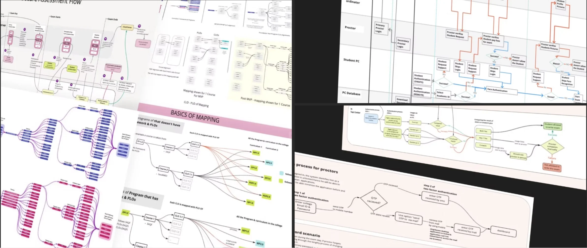
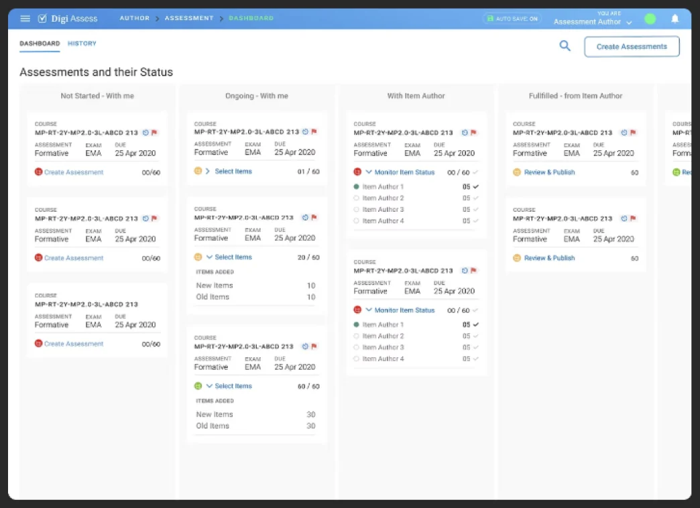

01 — The problem
Assessment prep was a manual process, split across roles that never saw the whole picture.
The real complexity wasn't the UI, it was who depended on whom.
DigiAssess is a web app that lets institutions assess student learning outcomes and map them to program and course learning outcomes. Before the redesign, the process behind scheduling, conducting, and publishing assessments lived in people's heads, split across subject-matter experts, item authors, proctors, and reviewers. No shared model connected them.
I joined as a contributor, working on individual modules. Over two years that grew into leading design for the product, working with other designers on a system that had to hold together across every one of those roles at once.
02 — What I found
Every role's task depended on another role finishing theirs first.
Working with subject-matter experts over remote calls, I mapped the raw process into flowcharts: how assessments get scheduled, how course outcomes map to program outcomes, how a student and proctor authenticate before an exam starts. Each flow surfaced a hidden handoff. A proctor couldn't act until a student authenticated. An author couldn't publish until a reviewer signed off.
The flowcharts weren't documentation. They were the requirement.

A sample of the process maps from the actual working files: secure assessment flow, student/proctor authentication swimlanes, and CLO-to-PLO mapping trees. Screens elsewhere in this case study are recreated for NDA reasons; these process diagrams show the underlying thinking.
One handoff, three roles waiting on it
A single exam session touched a scheduler, an exam co-ordinator, and one or more proctors, each seeing a different slice of the same event. If a proctor's login was late, or a student was paused mid-exam, that status had to surface to the co-ordinator immediately, not after the fact. The dashboard had to show live state across roles, not just the current user's own queue.
03 — The solution
I designed around the handoffs, not just the screens.
Status, not navigation, was the interface.
The assessment dashboard groups every assessment by where it sits for the person looking at it: not started, ongoing, with the item author, or fulfilled. A course only moves forward once the role holding it acts, so the board doubles as a live map of who's blocking what.

Assessment dashboard: assessments grouped by which role is holding them (not started, ongoing, with item author, fulfilled), not by course or date.
Course outcomes had to map to program outcomes underneath all of this, and that mapping is what the whole assessment gets measured against later. I simplified the mapping view to one course at a time, so a subject-matter expert could validate it without holding the entire curriculum in their head.
Course-to-program outcome mapping, recreated and simplified to one course: a subject-matter expert could validate a single mapping without the full curriculum in view, alongside a student's performance against the target benchmark.
Test specifications, how many questions of each type a course needs, also had to stay visible and editable, since it drove how much work item authors had left. A single chart across a course's assessments showed the item mix and total count at a glance.

A sample of the analytics views built on top of the same data: item coverage by topic, live session monitoring, outcome mapping counts, and student performance against benchmark.
04 — Outcome
No launch metric. A system that outlived me.
DigiAssess was still at deployment stage when I moved on to a new role, so there's no adoption number to point to here. What I can point to is what happened over the two years I was on it.
Requirements and screens were validated directly with subject-matter experts and users, not assumed.
Over two years I moved from contributing individual modules to leading design for the product, working with other designers on it. I got recognition from stakeholders and leadership for my contributions, and left documentation behind for other teams to build from when I moved on before deployment.
05 — What I'd do differently
I tested with the users I had access to, not the full range.
Research and validation happened with real users, but a handpicked set.
If I could go back, I'd push harder for access to the full range of users, especially proctors and students who'd use the system live under exam conditions, not just the people made available to me. Handpicked users can confirm a flow works. They can't tell you what breaks under the pressure of a real exam room.